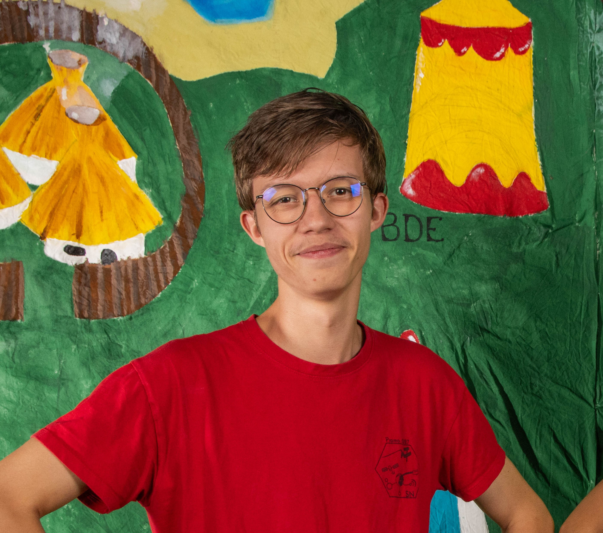

Arthur
Sauvezie
Final-year engineering student at ENSEEIHT in computer science and telecommunications, currently on exchange at Université Laval. Passionate about aeronautics, space and cybersecurity, and committed as a first-aider and student association leader.

EducationENSEEIHT, CS and Telecom
CurrentlyExchange, Université Laval
Looking forFirst job, from September 2027
Experience and projects
Details → Final-year projectAirbus Defence and Space · Feb – Jul 2027
Final-year projectAirbus Defence and Space · Feb – Jul 2027 Internship · SGCD, IT department (SIC)Préfecture de la Haute-Garonne · Jun – Aug 2026
Internship · SGCD, IT department (SIC)Préfecture de la Haute-Garonne · Jun – Aug 2026 Research internshipIRT Saint Exupéry · Jun – Jul 2025
Research internshipIRT Saint Exupéry · Jun – Jul 2025 net7 virtualisation infrastructurenet7 · 2025 – present
net7 virtualisation infrastructurenet7 · 2025 – present Network interconnection projectENSEEIHT · Toulouse INP · 2025 – 2026
Network interconnection projectENSEEIHT · Toulouse INP · 2025 – 2026